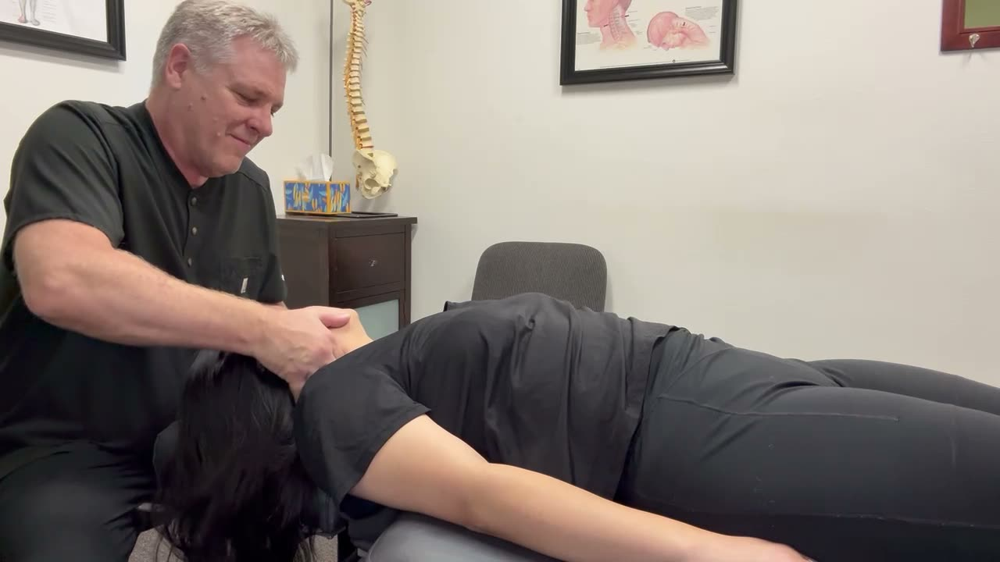

The not-knowing is usually what keeps people from booking. Will it hurt? Will someone crack my back the second I walk in? Will I be there for three hours? A first chiropractic exam is much less dramatic than the imagination makes it, so let's walk through it.
Before you arrive
You can fill out your intake paperwork online through the secure patient portal, which saves you from balancing a clipboard in the waiting room. If you are coming in because of a car accident, bring your insurance card, your PIP claim number if you have already opened a claim, and your attorney's contact information if you have one. If you have had imaging done, bring that too. Our new patients page has more.
Wear something you can move in. Jeans are fine. The stiffest pair of work pants is not.
The conversation comes first
Dr. Fred reviews your history and listens to what is going on. This part takes longer than people expect, and it matters more than people expect. Where is the pain? When did it start? What makes it worse, what eases it, and what have you already tried? Did anything happen, like a fall, a crash, or a new job lifting boxes? Have you had surgeries, or any other health conditions or medications we should know about?
Say it all, even the stuff that feels unrelated. A sore knee and a stiff neck turn out to be connected more often than you would think.
The hands-on exam
Next is a physical and orthopedic exam. In plain terms, we watch how you stand and move, check your range of motion, press on areas that might be tender, and run a few specific tests. Those can include checking reflexes, muscle strength, and sensation, or moving a limb into a position to see whether it brings on your symptoms. The goal is to work out which structures are involved: joints, muscles, discs, nerves, or some combination.
It should not be painful. Tell us if something is, since that is useful information too.
Findings and a plan, in normal language
After the exam we explain what we found without a pile of jargon, and we lay out a personalized plan. That plan can draw on spinal adjustments, traction, ultrasound and electrical stimulation, or rehab exercises, depending on your findings. Many patients begin treatment the same day, though that depends on what the exam shows. You are never pushed into anything. Ask about timing, how often you would come in, and what the plan is meant to accomplish.
Adjustments are not automatic at every visit, either. If you are wondering about the safety side, are chiropractic adjustments safe goes through it honestly.
A few things worth jotting down first
The exam goes better when you have thought about it ahead of time. Write down when the pain started, what time of day it is worst, and any medications or supplements you take. If a certain movement sets it off, notice which one. People tend to remember all of this the moment they are back in the car, so a note on your phone helps.
Questions worth asking
- What do you think is causing this?
- What would change your mind about the plan?
- How will we know it is working, and when do we reassess?
- What can I do at home between visits?
- What would make you send me to someone else?
Paying for it, and the crash case
We accept most major medical insurance and handle the billing, and we will verify your benefits for free before you commit to anything. If you have no coverage, ask about self-pay options. See our insurance page for more.
If you are coming in after a collision, the first visit also starts a clear record of your injuries and when they began, which can matter later. Your policy governs what is covered, so ask your agent about the specifics, and keep in mind this is general information rather than legal advice. Our pieces on how documentation supports your claim and the first 72 hours after a car accident are good reading beforehand, and the auto injury care page shows how it works for patients from Milwaukie, Oregon City, and Portland.
What you will walk out with
A clearer picture of what is going on, a plan you understand, and a next appointment if care is recommended. If you are not sure whether to come in at all, when to see a chiropractor versus waiting it out may help you decide, and our contact page is there if you want to ask something first.
Ready to book a first visit?
Fill out your forms ahead of time through the patient portal, then pick a time that works. We will take it from there.